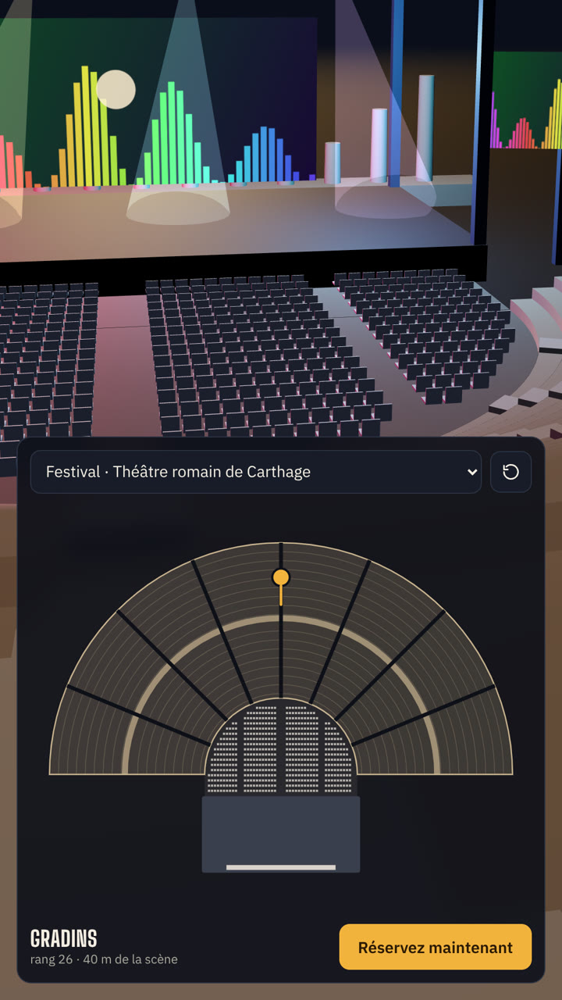
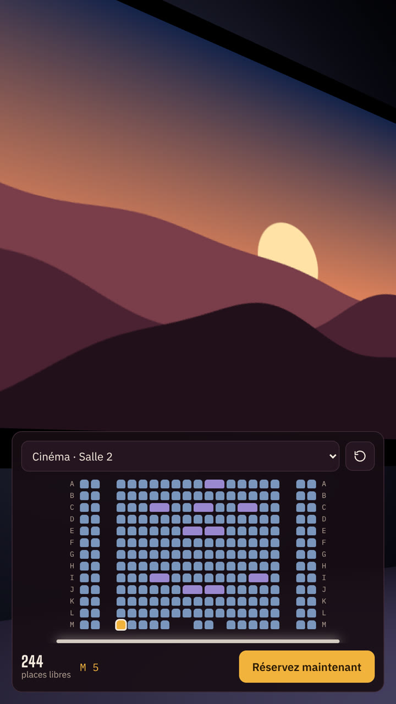

← Portfolio Own tool · 3D web · 2026
Seat View
Pick a seat and see the show from it before you book, in a cinema hall or at the Roman theatre of Carthage. Each hall is generated from the seat map a booking site already serves: rows, seat numbers, duo seats and wheelchair places, with the aisles found from the grid. Tap a seat on the plan and the camera moves to seated eye height, facing the screen.
It runs in the browser with Three.js and WebGL, on a phone or a computer, no app and no plugin. The demo holds 20 real halls (16 layouts) from three cinemas in Tunisia, shown without names; room depth and screen size are estimated until a venue shares its plans. The Carthage view rebuilds the festival venue from satellite measurements: click anywhere on the stone tiers or the chairs and see the stage from there. Try both with the live demo. Code on GitHub: seat-view.


Frequently asked questions
How does Seat View show a seat’s view?
Choose a seat on the 2D plan or in the 3D room, and the camera moves to seated eye height facing the screen. The viewer can estimate the screen distance and how much of the view the screen fills. Seat View gives venue teams an interactive way to explore sightlines from different seats.
How many halls are included in the demo?
The demo includes 20 halls from three multiplexes, grouped into 16 distinct layouts. Hall names are anonymized in the public demo, and row and seat details come from public booking maps. Visitors can compare seats across layouts and view the screen from seated eye height.
Does Seat View handle booking or live availability?
No. Seat View is designed to sit next to an existing booking flow rather than replace it. A link can return the visitor to the booking page; live availability would require the venue’s approved per-session seat data or API. The viewer demonstrates the 3D seat experience, not payment or seat inventory.